Paper Writing Tips¶
本部分内容来源于 MLNLP-World/Paper-Writing-Tips, 原文上一次更新时间比较久远(May 29, 2022)。
在这里进行摘抄。如果后续有补充，将会进一步更新。
特色：
写前必看：包含一些常见的错误，每个错误均配有例子，可以在动手写论文之前快速浏览。
终稿必查：包含一些例子，方便快速定位是否自己的论文有错误。
百家之言：整理了一些网络上公开的写作资源（并不完全，欢迎补充），方便大家系统学习。
解释¶
下文中，标注"Attention"的内容，是目前组织者认为有（较为）明显争议的建议条目。
写前必看¶
公式符号¶
1. 标量符号用小写拉丁字母表示¶
要点: 为避免混淆字母 l 和数字 1 ，字母 l 可用 \ell 替代。
2. 有结构的值使用 \boldsymbol（Attention）¶
要点: 有结构的值例如句子序列、树、图等 （下图仅展示为句子序列情况）
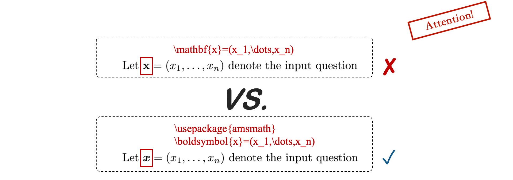
3. \boldsymbol 的集合可用 \mathcal （Attention）¶
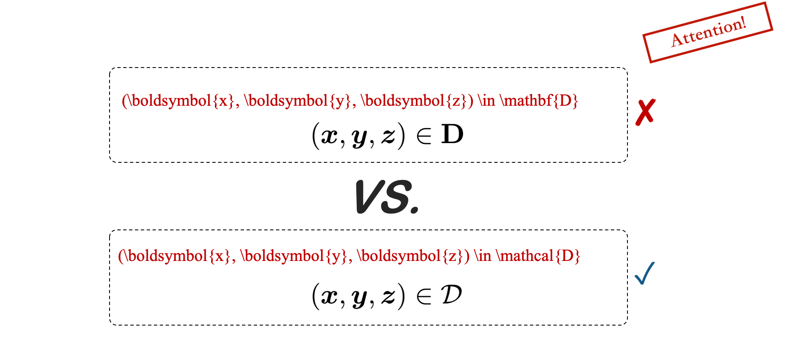
4. 向量值小写加粗，矩阵大写加粗¶
要点: 拉丁字母用\mathbf，希腊字母用\boldsymbol。
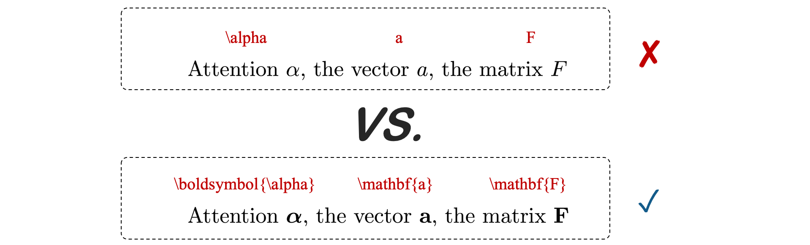
5. 数域、期望等使用\mathbb¶
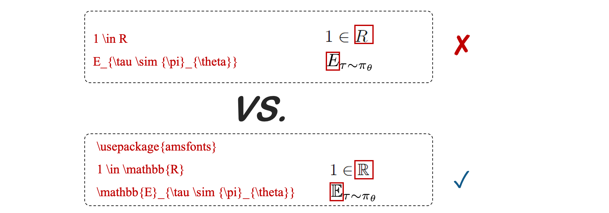
6. 保持元素与集合的符号对应¶
7. 写作风格要正式，避免缩写¶
don't拆开写成do nots所有格
's尽量转化为of
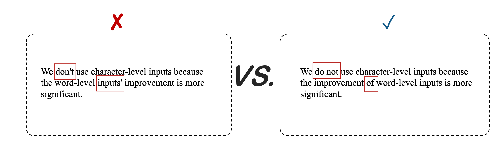
8. 拉丁文惯用语¶
e.g.,表示for example,i.e.,表示that is,et al.表示and others of the same kind,etc.表示and others,，不用于列举人et al.或etc.在句末时，不用再添加额外的句号
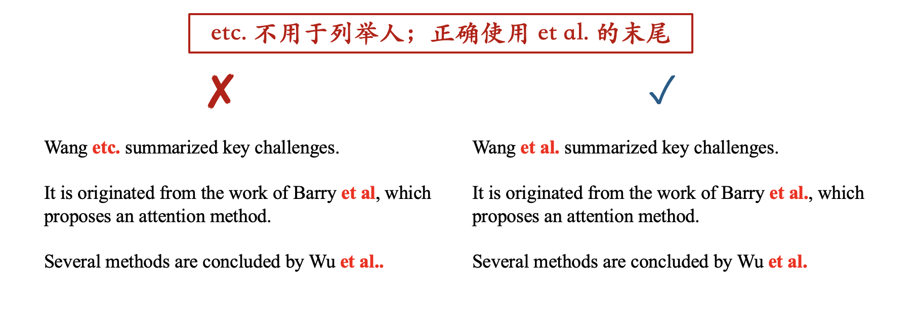
9. 英文引号¶
键位如图所示，使用 `` 和 ‘’ 分别表示左右引号，而不是其他符号或任何中文引号。
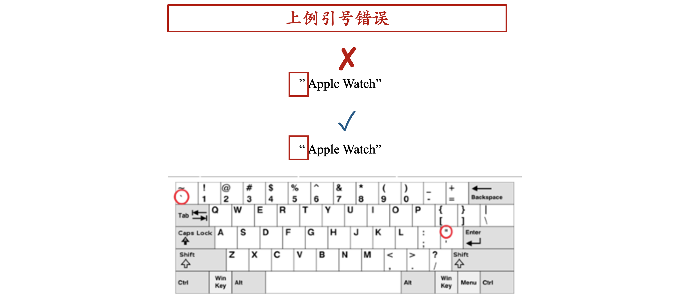
10. 不间断空格 “~”¶
使用 ~ 表示不间断空格，不间断空格不会导致意外的换行，例如：
Figure~\ref{} shows the model performance.
Table~\ref{} shows dataset details.
We use BERT~\cite{bert} model.
Section~\ref{} concludes this paper.
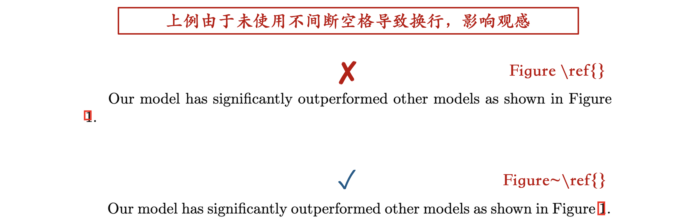
11. URL 链接¶
使用 \url{} 命令，需要导入包：
\usepackage{hyperref}
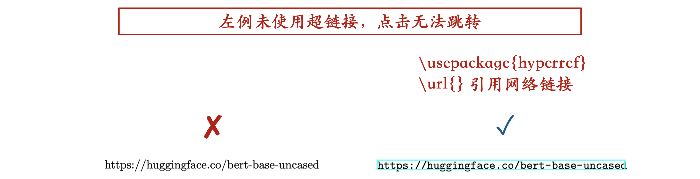
12. 引号只表示所谓，不表示引用（Attention）¶
引用的表述考虑使用斜体 \textit{} 而不是引号。
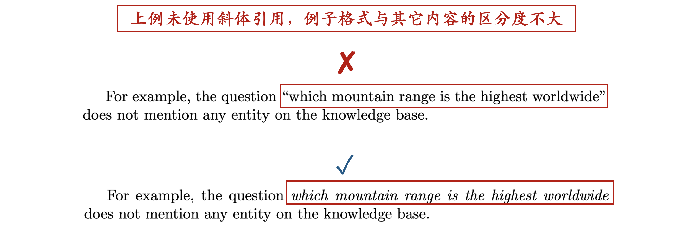
13. 非单个字母的变量名¶
公式中的 softmax，proj，enc 等超过一个字母的变量或符号，使用正文字体，即使用 \textrm 或 \textit 命令。
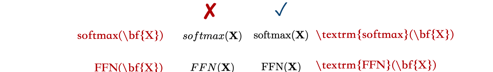
14. 使用函数命令¶
许多函数和符号有现成的命令，例如：\arg{}，\max{}，\sin{}，\tanh{}，\inf， \det{}， \exp{}.
15. 公式中的括号，应通过\left，\right进行标记¶
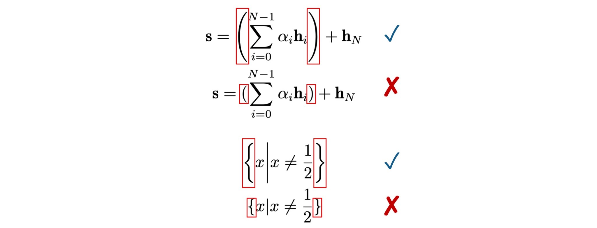
如 \left(\right), \left{\right}, \left<\right>, \left|\right|等。
括号中的分割通过\middle实现。
Latex代码如下：
\begin{gather} \bold{s} = \left(\sum_{i=0}^{N-1}{\alpha_{i} \bold{h}_i}\right) + \bold{h}_N\\ \bold{s} = (\sum_{i=0}^{N-1}{\alpha_{i} \bold{h}_i}) + \bold{h}_N \\ \end{gather} \begin{gather} \left\{ x \middle| x\ne\frac{1}{2}\right\} \\ \{ x | x\ne\frac{1}{2}\} \end{gather}
16. 使用 align 表示一组公式，等号对齐¶
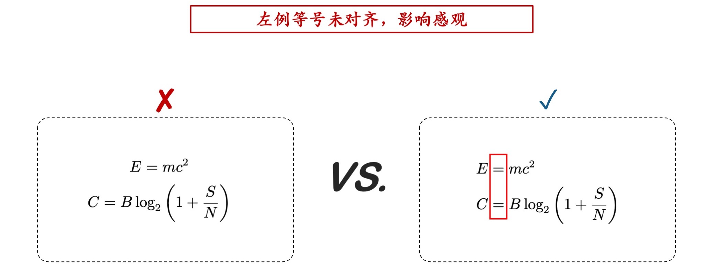
使用 align 表示一组公式，等号对齐。
Latex代码如下：
\begin{gather} E = m c^2 \\ C = B \log_2\left(1+\frac{S}{N}\right) \end{gather} \begin{align} E &= m c^2 \\ C &= B \log_2\left(1+\frac{S}{N}\right) \end{align}
17. 只对refer的公式中加编号（Attention）¶
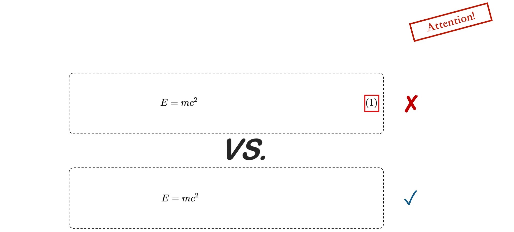
推荐：只对refer的公式加编号，\nonumber去编号。
Latex代码如下：
\begin{equation} E = m c^2 \end{equation} \begin{equation} E = m c^2 \nonumber \end{equation}
表格图片¶
18. 使用Booktabs绘制更好看的表格¶
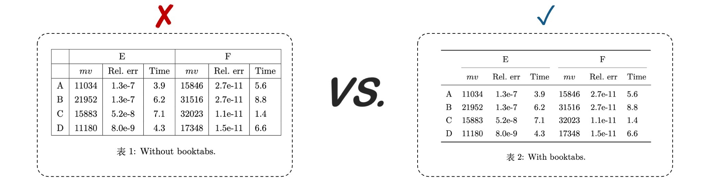
绘制表格时，使用 \usepackage{booktabs}，从而借助 \toprule, \bottomrule, \midrule, \cmidrule 命令，画出好看的分隔线。
Latex代码如下：
% Example of a table with booktabs from https://nhigham.com/2019/11/19/better-latex-tables-with-booktabs/. % First version of table. \begin{table}[htbp] \centering \begin{tabular}{|l|c|c|c|c|c|l|} \hline & \multicolumn{3}{c|}{E} & \multicolumn{3}{c|}{F}\\ \hline & $mv$ & Rel.~err & Time & $mv$ & Rel.~err & Time \\\hline A & 11034 & 1.3e-7 & 3.9 & 15846 & 2.7e-11 & 5.6 \\ B & 21952 & 1.3e-7 & 6.2 & 31516 & 2.7e-11 & 8.8 \\ C & 15883 & 5.2e-8 & 7.1 & 32023 & 1.1e-11 & 1.4 \\ D & 11180 & 8.0e-9 & 4.3 & 17348 & 1.5e-11 & 6.6 \\ \hline \end{tabular} \caption{Without booktabs.} \label{tab:without-booktabs} \end{table} % Second version of table, with booktabs. \begin{table}[htbp] \centering \begin{tabular}{lcccccl}\toprule & \multicolumn{3}{c}{E} & \multicolumn{3}{c}{F} \\\cmidrule(lr){2-4}\cmidrule(lr){5-7} & $mv$ & Rel.~err & Time & $mv$ & Rel.~err & Time\\\midrule A & 11034 & 1.3e-7 & 3.9 & 15846 & 2.7e-11 & 5.6 \\ B & 21952 & 1.3e-7 & 6.2 & 31516 & 2.7e-11 & 8.8 \\ C & 15883 & 5.2e-8 & 7.1 & 32023 & 1.1e-11 & 1.4\\ D & 11180 & 8.0e-9 & 4.3 & 17348 & 1.5e-11 & 6.6 \\\bottomrule \end{tabular} \caption{With booktabs.} \label{tab:with-booktabs} \end{table}
19. 章节、表格、图片的引用¶
章节、表格、图片使用\label{…}定义后，通过\ref{…}自动引用跳转。
对子图或子表的引用可以使用Figure~\ref{fig:figure}(a)来表示。
20. 不要把图表中的Caption在正文中复述¶
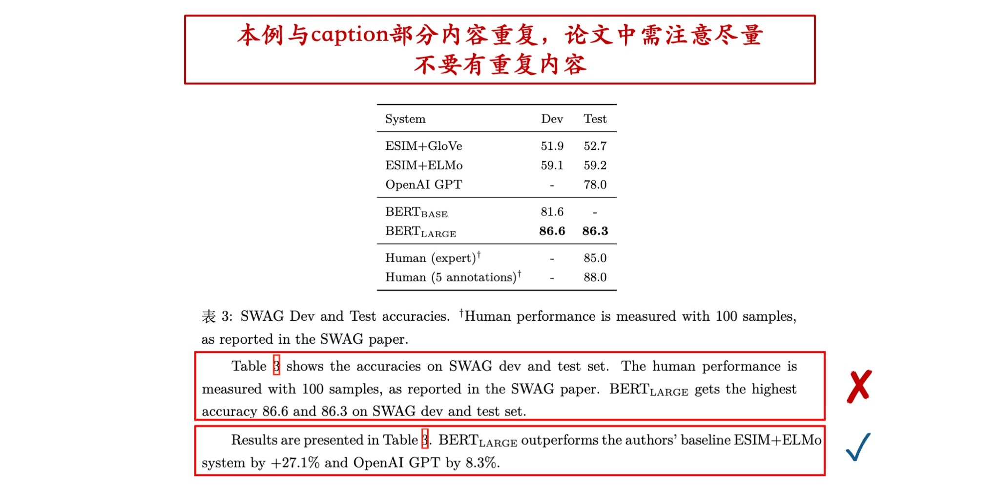
说明（Caption）是用来写“这个表格是什么”的。
正文是用来写“这个表格说明了什么”的。
21. “三线表”建议：尽量不要画竖线（Attention）¶
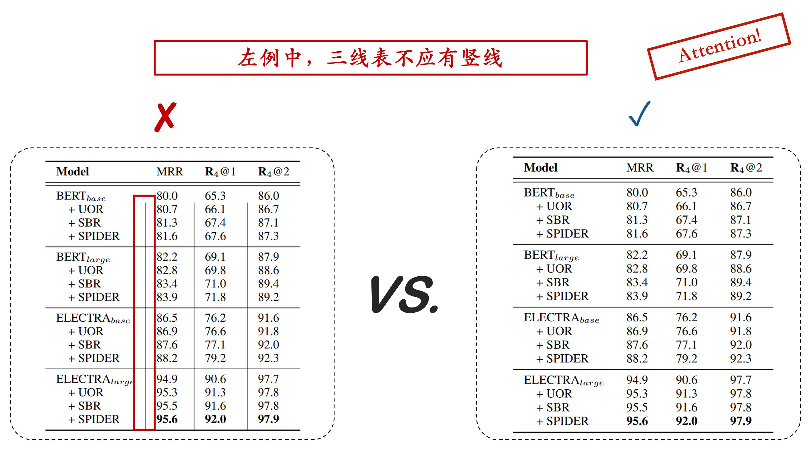
22. 表格大小调整¶
用 \centering 居中；用\small，\scriptsize，\footnotesize，\tiny 调整字号
用\setlength{\tabcolsep}{8pt} 调整列间距
用 p{2cm} 固定列宽
用\multirow，\multicolumn 合并单元格
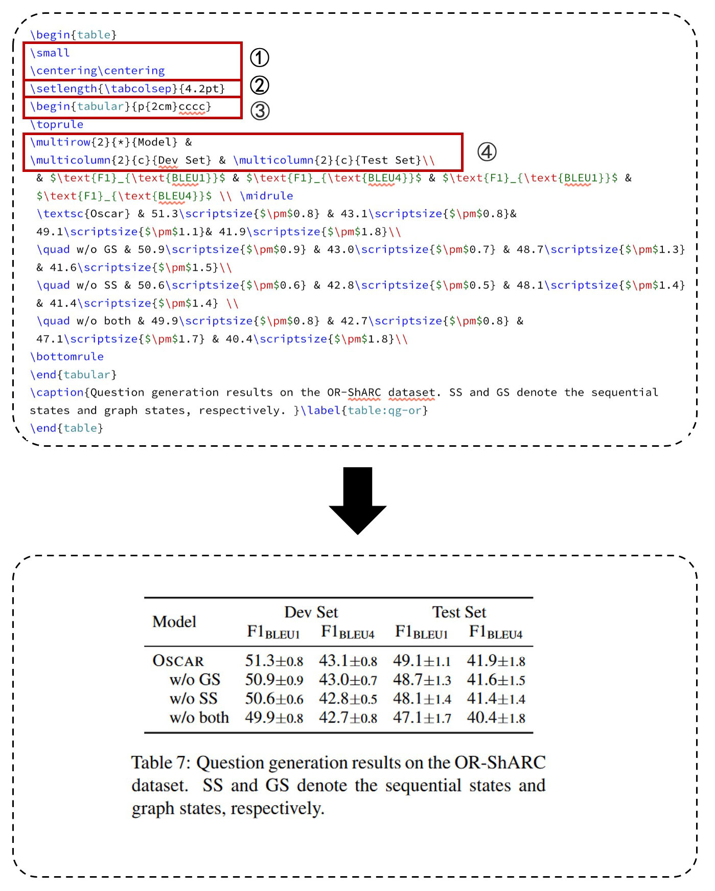
23. 矢量图：图像应使用矢量图（如PDF格式）¶
使用Adobe illustrator、OmniGraffle等软件绘制后存为矢量图
使用Matplotlib绘制后存储: plt.savefig(‘draw.pdf’)
在LaTeX中使用pgfplots直接绘制
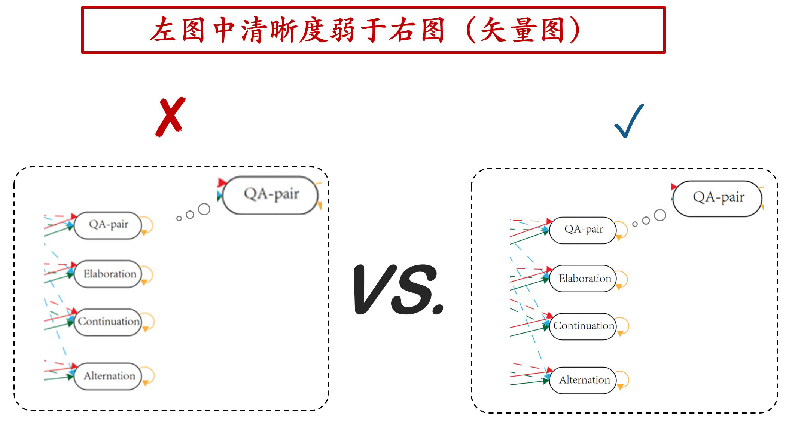
24. 图片字体大小介于正文字体与caption之间¶
建议图中字体大小保持一致
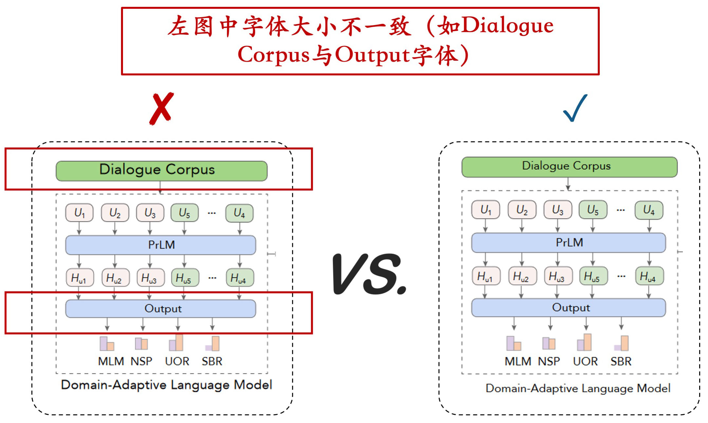
25. 论文中图片中文字说明字号应和正文文字大小相当¶
图片中文字字号大小不宜太大
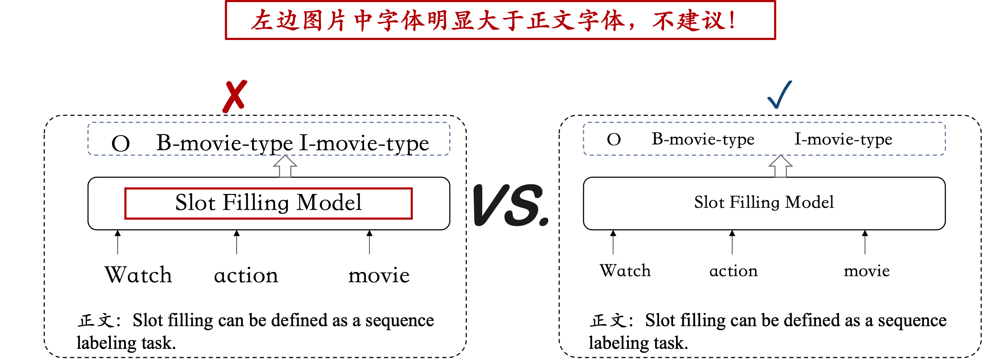
26. 图表设计应适用于黑白打印¶
对黑白打印友好：不要以颜色作为指代图示中线条的唯一特征，可使用实线/虚线 ，亮/暗，不同线形等。
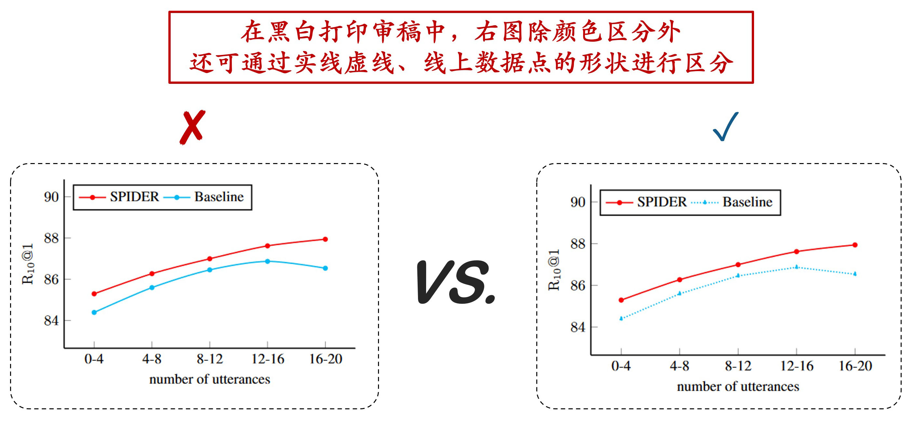
27. 图片风格保持简洁美观¶
不要使用过多的颜色种类，避免过亮的颜色
使用简洁的图示，尽量少用文字描述（例子除外）
同样功能模块使用统一格式
箭头走向应趋于同一个方向
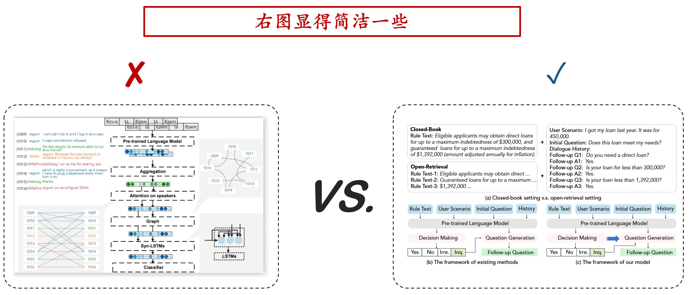
选词用词¶
28. 注意连词符的词性¶
一般连词符中，最后一个词是名词的，连起来是形容词词性；
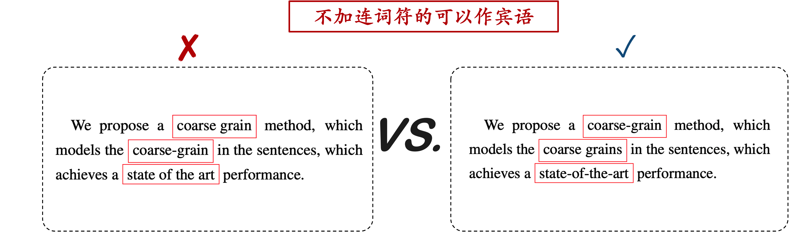
最后一个词是动词的，连起来是动词词性。
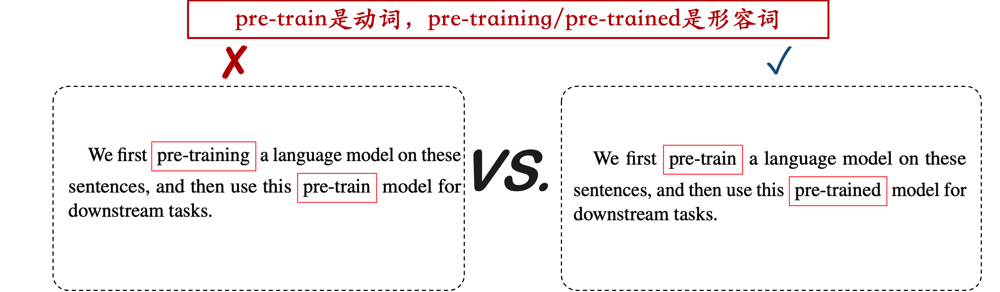
29. 词性易错点¶
First, Secondly，均为副词
training， test，validation，均为名词
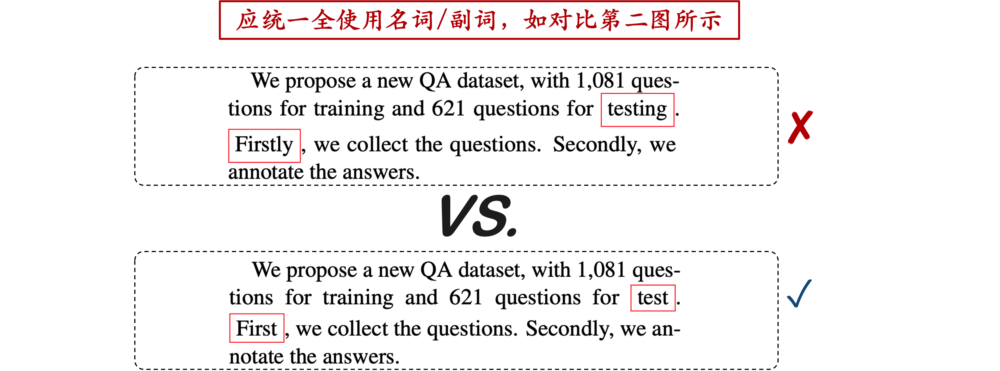
30. 缩写符合使用习惯¶
符合习惯，与提出者尽量一致CNN，LSTM，FEVER，ConceptNet，SQuAD，BiDAF，FEVER score，Wikipedia。
初次出现时，全称在前，缩写在后；或缩写在前，用于注释的citation在后。graph attention network (GAT)，pre-trained language model (PLM)；BERT~\citep{BERT}。
领域名、任务名、指标等一般不需要大写，如 natural language processing, question answering, accuracy, macro-F1 score.
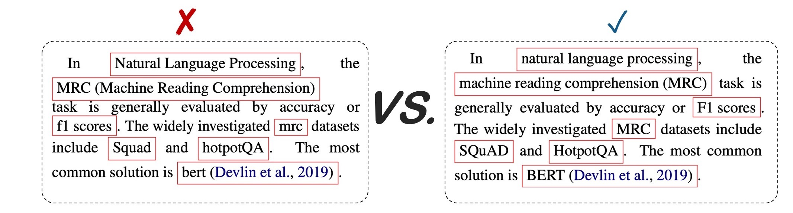
31. 注意单复数¶
尤其是不规则单复数变化、不可数名词。
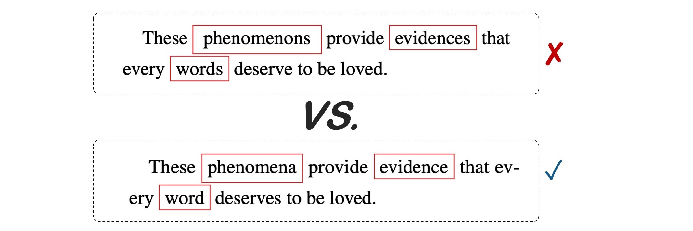
32. a/an 跟着元音音素走¶
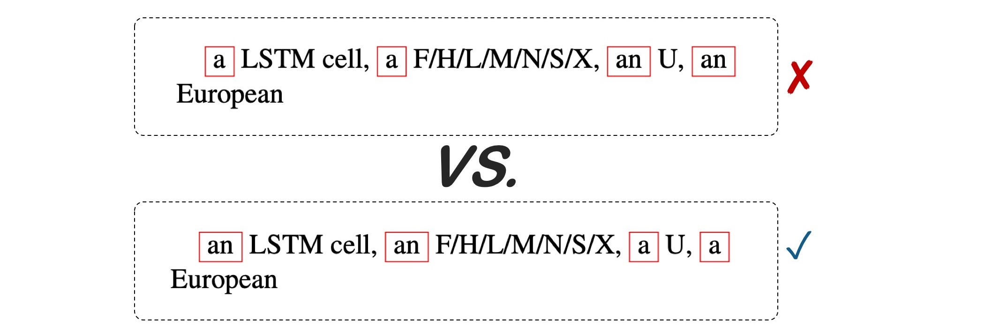
33. the的使用¶
注意：一般不会独立出现（不用冠词）可数名词单数，要么加the特指，要么加复数泛指。
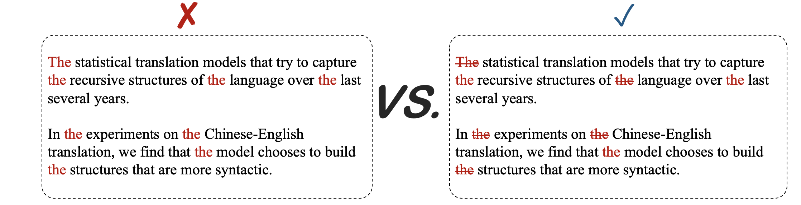
34. 时态：以一般现在时为主（Attention）¶
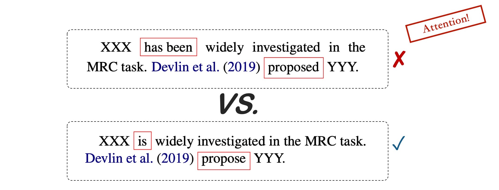
35. 避免绝对化表述。¶
使用straightforward替换obvious
使用generally、usually、often替换always
使用rare替换never
使用alleviate、relieve替换avoid、eliminate
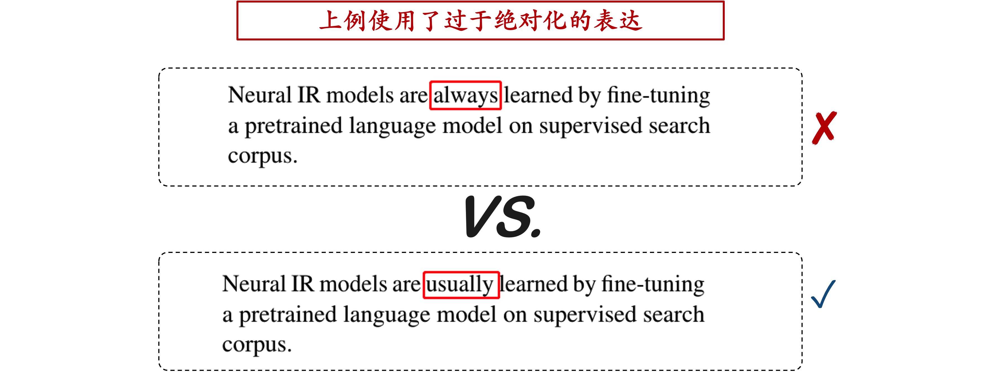
36. 避免一些模糊的表述，比如：meaning, semantic, better等。¶
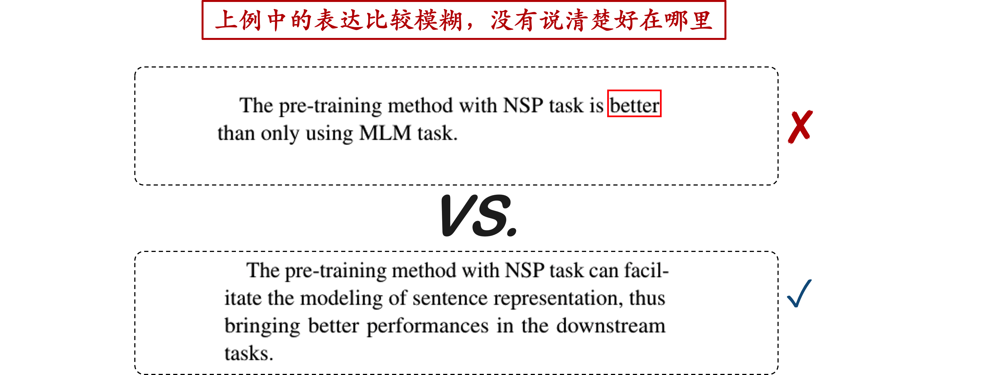
以better举例，也就是当表示一个事物更好时，不能仅仅说它更好，需要给出相应的解释与理由
句子表述¶
37. 避免过多使用代词：it，they等，模型名缩写也不长，并且更清楚。¶
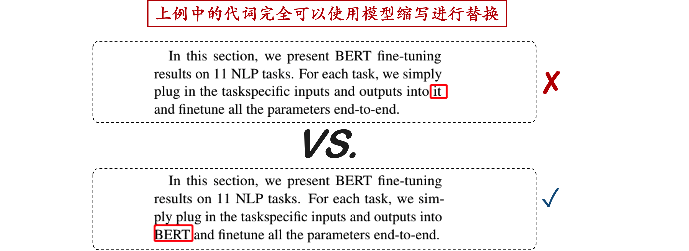
38. 避免过多贴标签，比如在谈论效果好时。¶
提出的方法到底改善了哪里，是什么导致的这个结果？
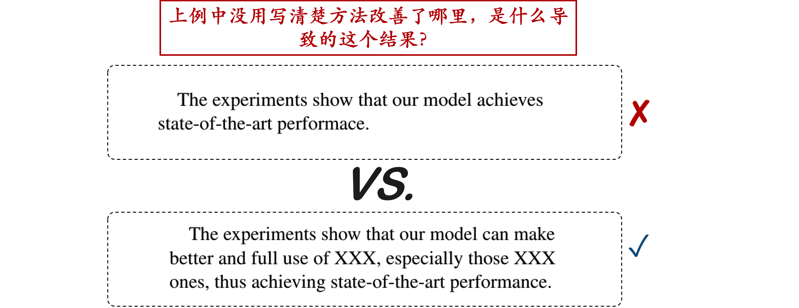
39. 一句话说一件事。尽量使用简单句，少使用长的复合句。¶
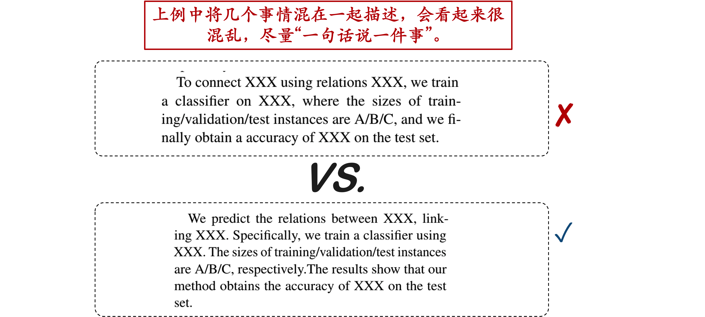
40. 观察/发现？假设？方法？效果？不要混着说。¶
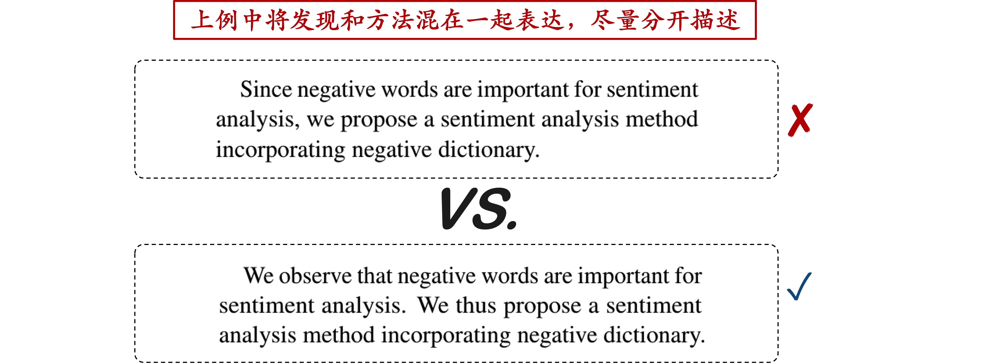
段落布局¶
41. 一行字数未超过1/4时，建议删除或者增加字数。（Attention）¶
可选：可以尝试在该段话的最后，添加
\looseness=-1，有时可以在不删除最后一行的情况下，将最后一行的个别单词“挤上去”。
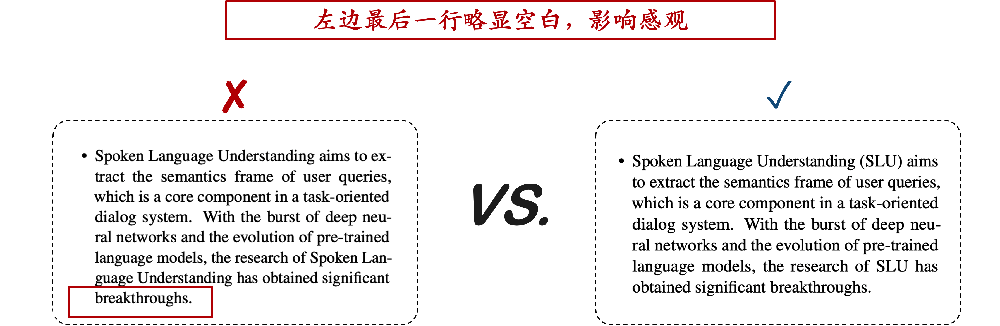
参考文献¶
42. 参考文献引用需要排查是否在句子中做成分¶
要点：引用使用\citep{}，作为插入语；或\citet{}，作为句子主要成分如主语、宾语等。
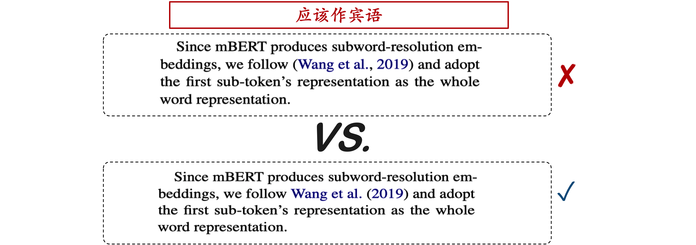
43. 尽量引用发表的版本而非arXiv版本。¶
会显得正规一些
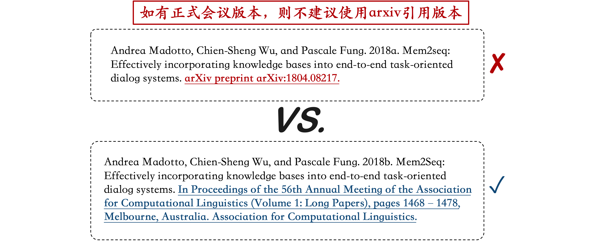
44. 引用条目的格式尽量前后一致¶
如会议名缩写、是否包含会议时间地点等是否所有的参考文献格式保持了一致
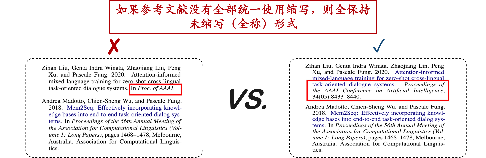
终稿必查——投稿前一周，一天¶
关于科技英语书写习惯¶
1. 可参考拼写检查软件，检查文本是否有语病或不符习惯的表达。¶
2. 不要使用 didn’t can’t don’t isn’t aren’t 之类的缩写形式 任何时候都不要用撇号缩写。对于所有格，完全不要用，非要表达类似意思，用of短语。对于引号，要尽力避免。¶
3. 使用缩写（如模型名、定义等），需在使用的最初始位置定义。¶
4. 模型名字大小写保持一致，如BERT，ELECTRA，避免Bert，Electra，electra混合使用。¶
5. 例句、例子考虑用斜体¶
6. \begin\item改成正常段落可以使页面更紧凑（然后在每段前手工加打黑点\(\bullet\)），浪费过多空间有被怀疑灌水之嫌¶
7. 脚注的写法：一般情况下，脚注可以写在“脚注相关的地方后第一个非左标点符号（如左引号、左括号）”后面。\footnote命令和它前面的标点符号之间没有空格。¶
8. A和an的区别在于发音：an LSTM cell, an F/H/L/M/N/S/X, a U.¶
9. 文章各级标题的大小写风格统一，例如短语首字母大写或单词首字母大写¶
10. 使用babel实现单词按音标音节换行（hyphenation patterns）的效果，即\usepackage[english]{babel}¶
关于图片：¶
11. 图片内部的字体应统一且跟正文文字大小一致。¶
12. 整张图片两侧尽量不要有空白，保持紧凑。¶
13. 图片通常在每一页的最上方或中间，而不是最下方。¶
14. 同类型模块颜色尽可能保持一个色系，每类单元用同一个颜色填充或作为边框。¶
15. 同样色系，如果某个模块颜色更深更亮 ，代表这个模块更为重要。如果不是想表达更为重要，更为核心，请在各个模块之间保持均衡颜色分配，比如灰度值尽量一致。¶
16. 不得使用过多的颜色种类，颜色最好不要高于六种。¶
17. 图片使用矢量图。¶
18. figure本意是提供比文字更直观、更明了简洁的表达的，应尽可能动用合理的绘画元素，而不是大量用文字标记。figure元素、规范用最小集合、最统一、一致的设置完成，一般不会难看。¶
19. 细节到线型、配色：第一，保持统一（低描述复杂性），第二，用一个意思、类别的图形元素该用近似、一样的线形、配色（认知直观性）。¶
20. 箭头方向尽量保持同向，避免出现来回折转。流程图中避免出现孤立组件（无任何来源或去向箭头标识）。¶
关于引用：¶
21. 引用标记的选取：¶
引用在文字外（parent），使用 \cite。
引用在文字内（within text）
ACL/NAACL/EMNLP模板使用\citet{…}；
COLING模板使用\newcite{…}；
AAAI/IJCAI模板使用\citeauthor{…} \shortcite{…}；
IEEE模版：\citeauthor{…}~(\citeyear{…})
效果：(Zhang et al. 2020) vs. Zhang et al. (2020)
22. 如果篇幅较紧张，可以在引用中使用会议期刊名称的缩写。¶
可以参考工具 SimBiber
23. bib管理注意保持会议/期刊名称全称和缩写一致性，检查年份、卷号、页码等，不要完全依赖 scholar 提供的信息（可能存在缺失或格式混乱）。¶
可以参考工具 Rebiber
24. 章节、表格、图片使用\label定义后，可通过\ref自动引用跳转。¶
25. 引用和正文之间留有一个空格，而不是紧邻正文字母。¶
26. 不要重复引用同一论文的不同版本，例如 arXiv和正式会议论文。¶
关于公式：¶
27. 公式为句子的一部分。因此可在公式内部（尤其是多行）加入逗号和句号。¶
28. 对于公式后面的文字，若与公式组成完成的句子，则首字母不需要大写，并紧接在公式后面；若另起新的句子或段落，则在公式结束符\end后换行，并句子首字母大写，开启新的句子。¶
投稿前注意事项：¶
29. 检查文章的匿名性，不能包含个人与机构信息。¶
30. 检查是否超页（最后时刻慎重勿随意改图表大小）¶
31. 检查标题和摘要与投稿系统填写框内的信息是否对应。¶
32. 检查提交的数据与代码，不能包含个人与机构信息，尤其 code 里面一些 hard coded 的模型或数据路径等需要处理掉，另外需要注意隐藏文件夹（如 .git）¶
33. Overleaf 在部分会议投稿前可能访问缓慢，请注意LaTex备份¶
34. 论文的历史版本可以用时间编号，避免提交的不是最终版本¶
35. 截稿前一天最好提前交一个版本的论文以及附录，防止截稿时服务器崩溃¶
36. 交稿后仍需要关注会议官网和注册邮箱，以及时收到可能存在的会议截稿日期延后的消息。¶
百家之言¶
● 清华大学刘洋老师的CWMT-2014报告：机器翻译学术论⽂文写作⽅方法和技巧
● 复旦大学邱锡鹏老师的CCL-2018报告：如何端到端地写科研论文？
● 中国人民大学赵鑫老师：如何以初学者的身份写好一篇国际学术论文
● 香港中文大学（深圳）陈冠英老师整理的写作建议 || & Rebuttal Template
● 哥伦比亚大学 Henning Schulzrinne 老师：Tips and Resources for Writing Computer Science Papers
● 哈佛大学 Whitesides 老师：从写提纲的角度切入讲解如何撰写学术论文
● 卡耐基梅隆大学 Graham Neubig 老师：How to Read/Write an International Conference Paper & Paper style guide
● MSR研究员Simon Peyton Jones老师：How to Write a Great Research Paper
● 支付宝研究员王益老师：“学好语文，才能写好代码”（很多观点对写论文同样适用）
● 哈尔滨工业大学刘一佳博士的NLPCC-2018报告：论文写作的易读性原则
● 夕小瑶的卖萌屋：11 个好用的科研工具推荐！工作效率提升 max！
● 夕小瑶的卖萌屋：吐血整理：论文写作中注意这些细节，能显著提升成稿质量
● Deepmind Chris Dyer 等老师：关于NLP论文中公式的建议
● Google Brain的Bo Chang老师的LaTeX Tips
● acl-org/aclpubcheck: Tools for checking ACL paper submissions
● dspinellis/latex-advice: Advice for writing LaTeX documents
● Graham Neubig：How to Read/Write an International Conference Paper
● Karl Whelan：Writing Tips for PhD Theses
● Karl Whelan：Tips for Preparing and Publishing Research Papers